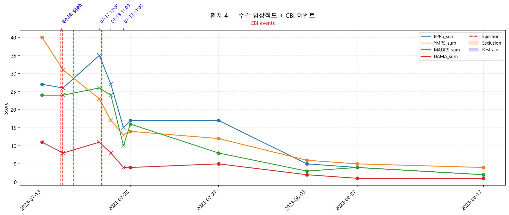

📊 Data Science · AI/ML · Research Developer
김소정
Data Scientist & Research Developer · 수원대학교 데이터과학부
3편
논문 발표
4회
수상 이력
9+
프로젝트
Data Scientist & Research Developer · 수원대학교 데이터과학부
수원대학교 데이터과학부에서 수업 프로젝트부터 서울대병원·가톨릭대병원 연구 협업까지 다양한 규모의 프로젝트를 경험하고 데이터 전처리·모델링·논문 작성까지 전 과정을 담당해왔습니다. 한국정보과학회 논문 3편 발표와 공모전 수상(풍력발전량 예측 272팀 중 7위) 실적을 갖추고 있으며 의료·환경·음향·스포츠심리 등 다양한 도메인에서 실전 데이터를 다뤄왔습니다. 3학년부터 함께한 지도교수님이 이직하신 후에도 공동 연구를 이어갔고, 4학년부터는 다른 교수님의 제안으로 두 연구실을 병행했습니다.
